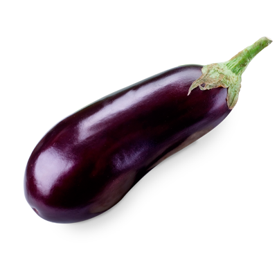
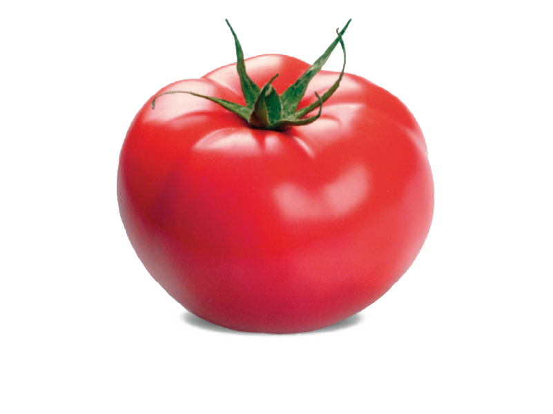
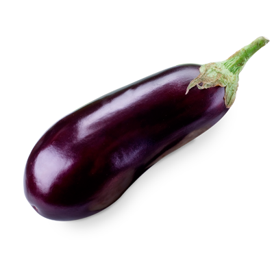
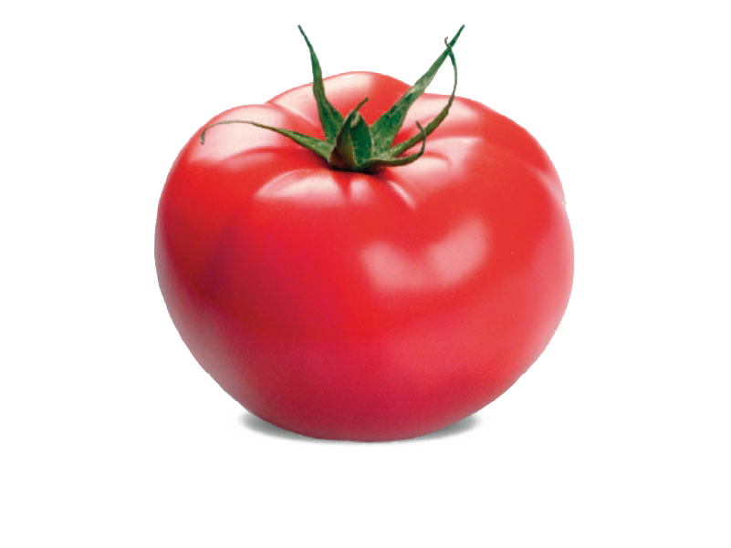
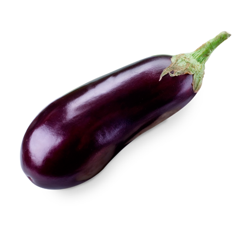
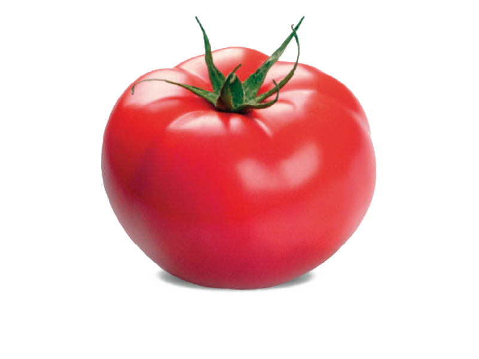
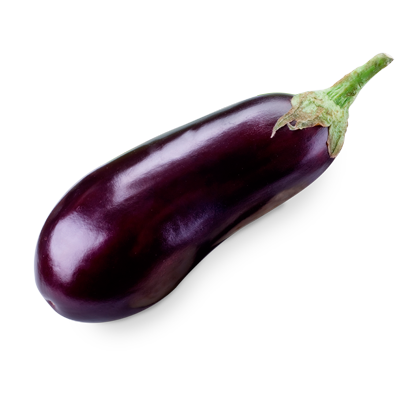
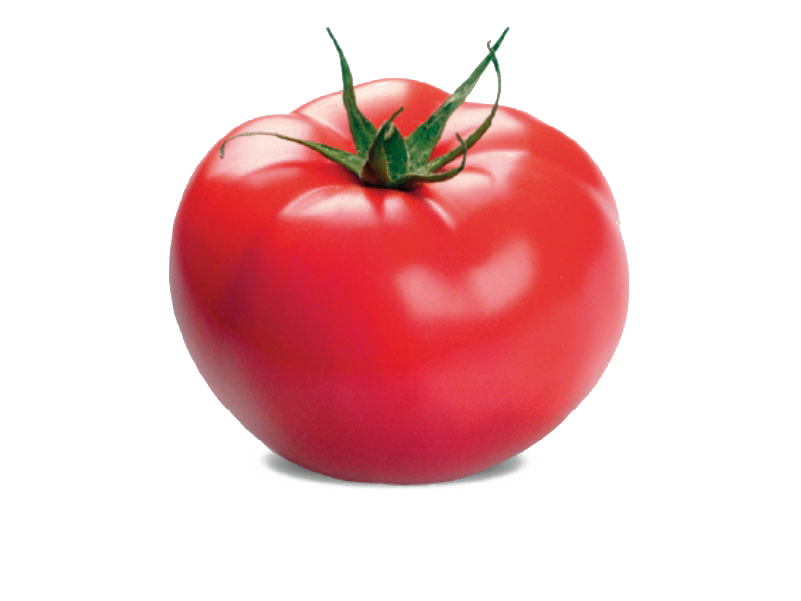

Para obtener una tierra más rica nutricionalmente, puedes alimentarla con cáscaras de verduras, frutas, huevo, restos de yerba y café.
Aparte de tener un mayor valor nutricional y reducir costos, es más saludable. Este tipo de cultivo no daña nuestro ecosistema y promueve la plantación de variedades criollas salvándolas de la extinción. Un alimento cultivado en nuestro huerto se convierte en un producto, de confianza, fresco y saludable, además da la satisfacción de haberlo cultivado nosotros mismos.